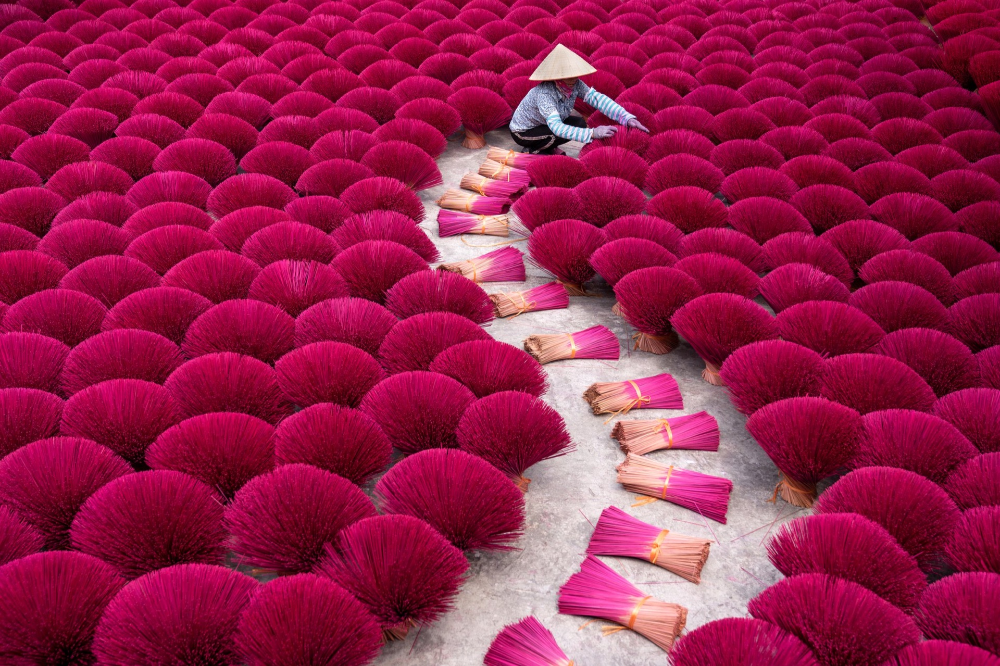
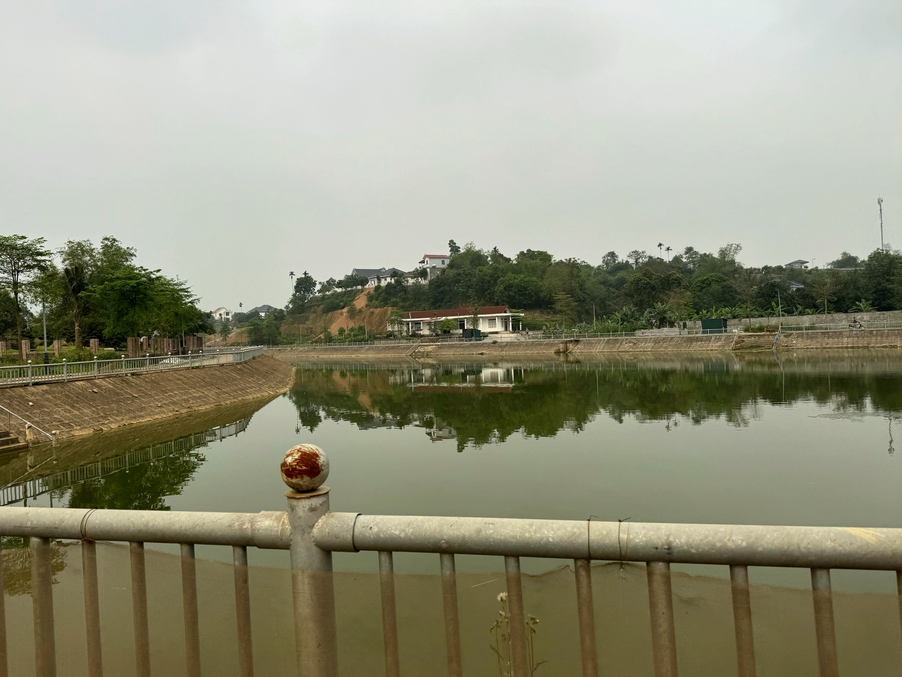
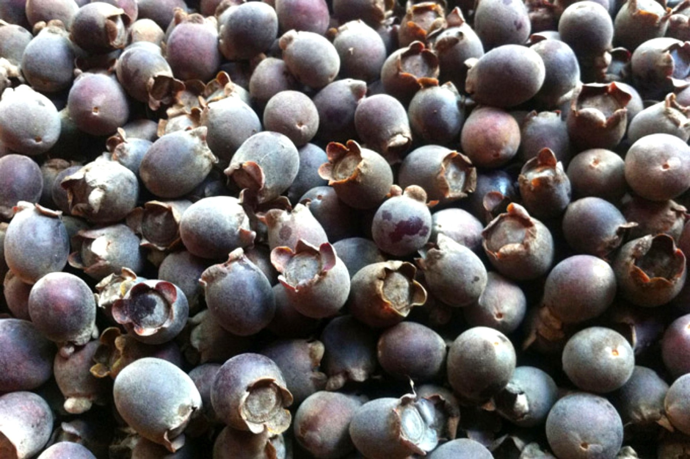
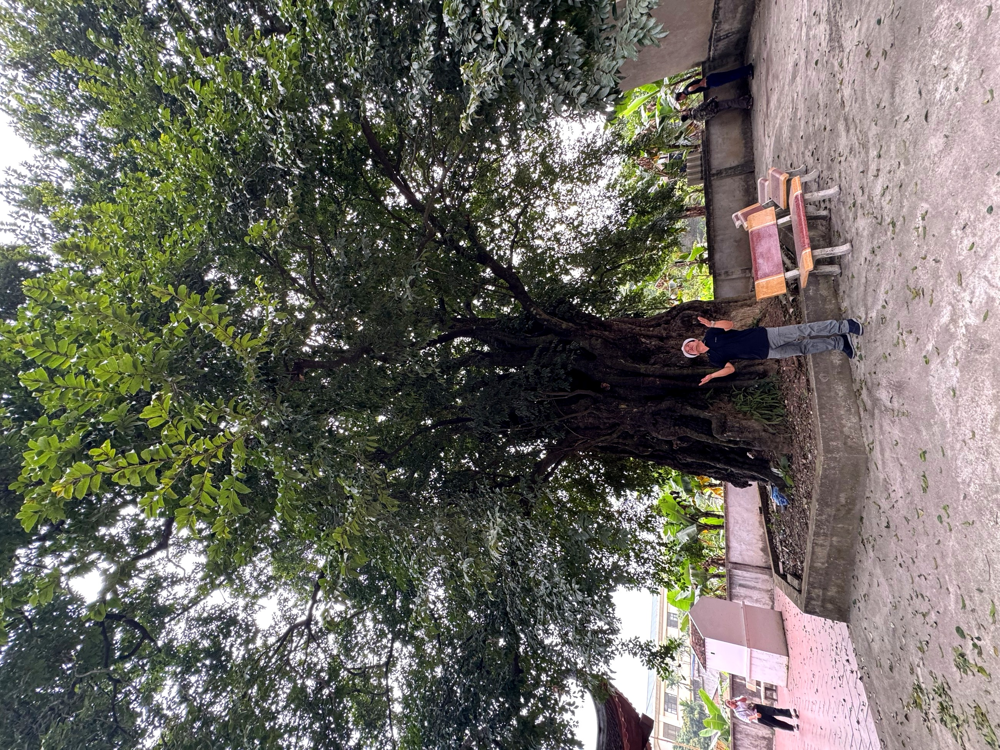

Hà Nội · Quảng Phú Cầu · Mường CốcHanoi · Quang Phu Cau · Muong CocHanoi · Quang Phu Cau · Muong Coc
Quảng Phú Cầu và Mường Cốc — hai điểm đến cách nhau chưa đầy 20 km trong vùng Ứng Hoà và Mỹ Đức — mang hai sắc thái hoàn toàn khác biệt nhưng bổ sung nhau rất khéo: một nơi rực rỡ mùi hương, một nơi trầm lắng tiếng bản Mường. Hành trình ghép hai điểm trong cùng một ngày — buổi sáng giữa những bó hương xoè rực lửa, buổi chiều bên mâm Cỗ Lá Mường và nhịp xe đạp chầm chậm qua bản. Hai gam màu, một ngày, để bạn vừa choáng ngợp vừa lắng lại.
Quang Phu Cau and Muong Coc — two destinations less than 20 km apart in the Ung Hoa and My Duc areas — carry two utterly different moods that complement each other beautifully: one ablaze with incense colour, the other quiet with the sounds of a Muong village. The journey pairs them in a single day — a morning amid fiery fans of incense sticks, an afternoon beside a Co La Muong feast and the slow rhythm of cycling through the village. Two palettes, one day, to leave you both dazzled and at peace.
Quang Phu Cau et Muong Coc — deux destinations distantes de moins de 20 km dans les régions de Ung Hoa et My Duc — offrent deux ambiances radicalement différentes qui se complètent magnifiquement : l'une flamboyante de couleurs d'encens, l'autre paisible avec les sons d'un village Muong. Le voyage les associe en une seule journée — une matinée au milieu des éventails ardents de bâtonnets d'encens, un après-midi près d'un festin Co La Muong et au rythme lent du vélo à travers le village. Deux palettes, une journée, pour vous laisser à la fois ébloui et en paix.
5 lý doreasonsraisons
Hành trình The Le trong ngàyjourneyparcours
Những điểm Places you'll Les lieux bạn sẽ quadiscoverà découvrir




Bao gồm Included Inclus & không& not& non inclus
Đã bao gồmIncludedInclus
- Xe đưa đón và di chuyển giữa các điểm theo lộ trình (Hà Nội → Quảng Phú Cầu → Mường Cốc → Hà Nội)Transfers and transport between sites along the route (Hanoi → Quang Phu Cau → Muong Coc → Hanoi)Transferts et transport entre les sites le long de l'itinéraire (Hanoi → Quang Phu Cau → Muong Coc → Hanoi)
- Hướng dẫn viên; phần Mường Cốc do HDV bản địa phụ tráchA guide; the Muong Coc segment is led by a local guideUn guide ; le segment Muong Coc est mené par un guide local.
- Trải nghiệm tham quan làng hương Quảng Phú Cầu theo chương trìnhThe Quang Phu Cau incense-village visit per the programmeLa visite du village d'encens de Quang Phu Cau selon le programme
- Xe đạp và mũ bảo hiểm tại Mường CốcBicycle and helmet at Muong CocVélo et casque à Muong Coc
- Bữa trưa Cỗ Lá Mường tại nhà dân (zero plastic)Co La Muong feast lunch at a local home (zero plastic)Déjeuner festif Co La Muong chez l'habitant (zéro plastique)
- Nước uống và khăn lạnh trong suốt hành trìnhDrinking water and cool towels throughout the journeyEau potable et serviettes rafraîchissantes tout au long du voyage
- Bảo hiểm du lịch trọn góiComprehensive travel insuranceAssurance voyage complète
Không bao gồmNot includedNon inclus
- Ăn sáng, ăn tối và đồ uống ngoài chương trìnhBreakfast, dinner, and beverages outside the programmePetit-déjeuner, dîner et boissons en dehors du programme
- Đồ uống trong bữa ănBeverages during mealsBoissons pendant les repas
- Chi phí mua sắm cá nhân tại làng hươngPersonal shopping at the incense villageAchats personnels au village de l'encens
- Tiền tip cho hướng dẫn viên và lái xe địa phương (nếu có — gợi ý)Tips for the guide and local drivers (optional — suggested)Pourboires pour le guide et les chauffeurs locaux (facultatif — suggéré)